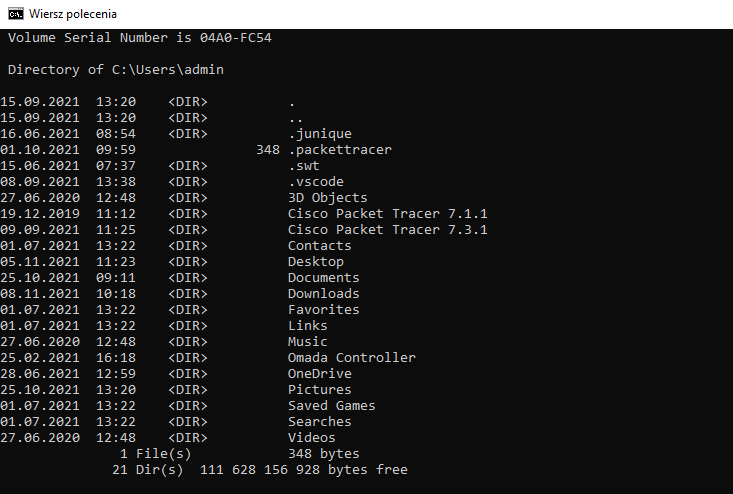
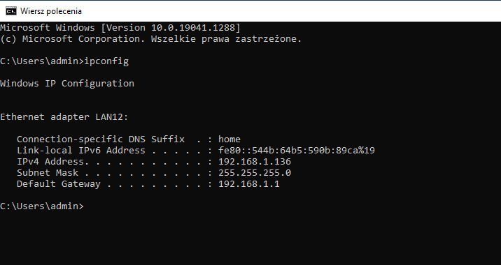
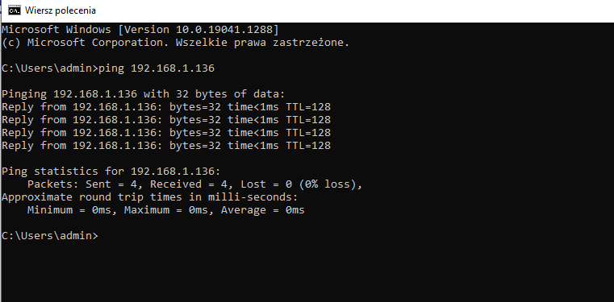
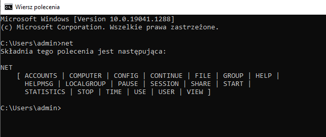
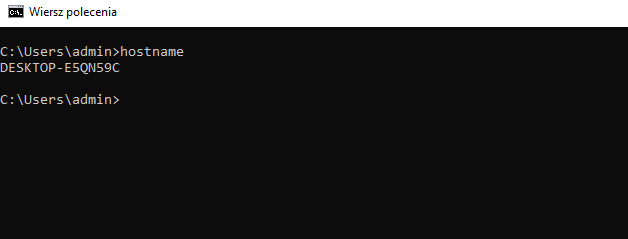
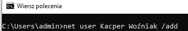
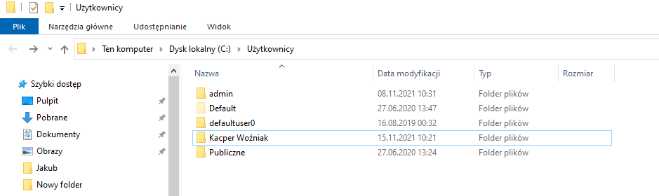

Przydatne polecenia:
sfc - Gdy twój system bezustannie zawiesza siê, a przyczyn¹ tego jest uszkodzony plik systemowy, skorzystaj z polecenia sfc, aby zast¹piæ go nienaruszonym egzemplarzem. Uruchom konsolê tekstow¹ z uprawnieniami administratora, po czym wpisz sfc /scannow.
cls – polecenie, które wyczyszcza zawartoœæ wiersza poleceñ
dir – Polecenie dir pozwala nam wyœwietliæ zawartoœæ katalogu

md nazwa_katalogu – powoduje utworzenie nowego folderu o podanej nazwie w katalogu, w którym aktualnie siê znajdujesz
cd nazwa_folderu – ta komenda przeniesie Ciê do katalogu o podanej nazwie, ale musi on byæ zawarty w folderze, w którym siê aktualnie znajdujesz.
rd nazwa_katalogu – usuniêcie folderu o podanej nazwie
del nazwa_pliku – usuniêcie pliku (nie katalogu) o danej nazwie.
partycja\œcie¿ka\aplikacja.exe - ta komenda uruchomi aplikacje np. C:\Users\Administator\Desktop\aplikacja.exe.
shutdown /s – zamkniêcie systemu Windows;
shutdown /r – zrestartowanie komputera;
shutdown /f – natychmiastowe zamkniêcie wszystkich aplikacji oraz systemu Windows;
shutdown /s /t [liczba_sekund] – zamkniêcie systemu po up³ywie okreœlonej liczby sekund;
shutdown /a – anulowanie poprzednio wprowadzonej komendy shutdown.
chkdsk [dysk] – sprawdzanie dysku (np. chkdsk C:);
chkdsk [dysk] /F – naprawa b³êdów;
chkdsk [dysk] /R – lokalizowanie uszkodzonych sektorów i przywracanie informacji (obejmuje dzia³anie opcji /F).
copy – kopiuje pliki
calc – uruchamia kalkulator
control – uruchamia panel sterowania
date - wyœwietla datê
rxit – zamyka wiersz poleceñ
rename – zmiana nazwy pliku
Polecenia sieciowe:
ipconfig - poleceniem ipconfig przywo³asz bie¿¹cy adres IP swojego komputera. Jeœli wyposa¿y³eœ komputer w wiêcej ni¿ jedn¹ kartê sieciow¹ lub korzystasz z oprogramowania wirtualizuj¹cego, na ekranie pojawi¹ siê adresy wszystkich kart sieciowych. Parametrem /renew przydzielisz urz¹dzeniu okreœlony adres IP. W ten sposób mo¿na usun¹æ drobne problemy wystêpuj¹ce w sieci lokalnej.

ping <adres IP sprawdzanego komputera> - gdy pod³¹czysz kolejny komputer do sieci lokalnej, a nie pojawi siê w oknie otoczenia sieciowego, sprawdŸ, czy odpowiada na ¿¹danie echa (ping). SprawdŸ w danym komputerze jego adres IP, po czym wpisz polecenie ping <adres IP sprawdzanego komputera>

net - za pomoc¹ polecenia net mo¿esz zarz¹dzaæ wieloma funkcjami w sieci lokalnej. Narzêdzie obs³uguje oko³o 20 argumentów podstawowych i jeszcze wiêcej argumentów podrzêdnych. Zestawienie podstawowych uzyskasz, wpisuj¹c net /?. Jednym z najczêœciej u¿ywanych argumentów jest use. Pozwala m.in. mapowaæ foldery udostêpnione w sieci lokalnej, aby by³y dostêpne niczym dyski lokalne. Aby uzyskaæ pomoc, wpisz net use /?

hostname – ukazuje nazwê maszyny

Tworzenie nowego konta u¿ytkownika

